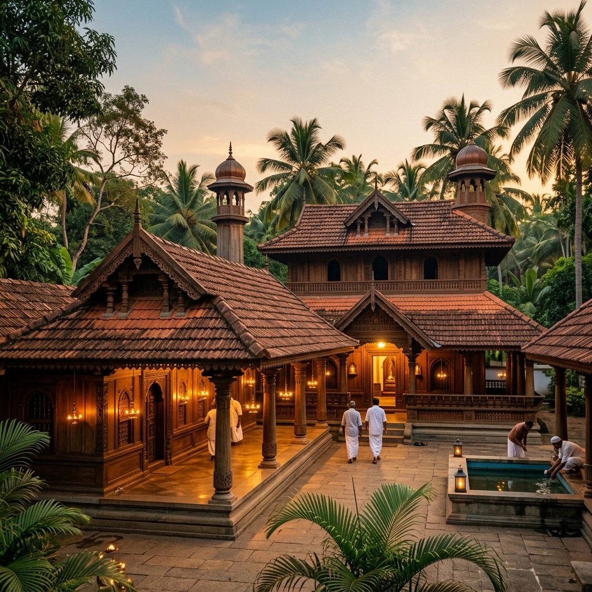
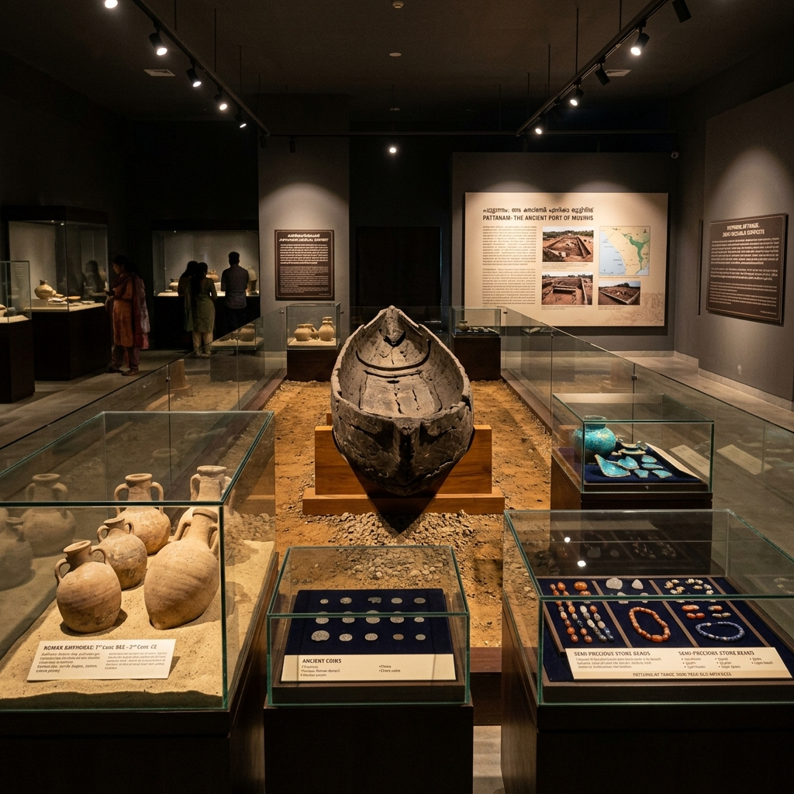

Kodungallur Ancient Port Explorer
Step into Kodungallur (ancient Muziris), India's premier ancient maritime emporium. Discover the historic gateway of the Indian Ocean, Roman gold trade routes, groundbreaking Pattanam excavations, and centuries of syncretic spiritual heritage.
The Legendary Port of Muziris
Kodungallur, situated at the mouth of the Periyar River in Thrissur district, Kerala, is historically and archaeologically identified as the core site of Muziris (Muciri) — the legendary ancient port city of South India.
Mentioned in Tamil Sangam literature as Muciri where "the beautiful vessels of the Yavanas (Greeks & Romans) arrive with gold and leave laden with black pepper," Kodungallur served as the Royal Capital of the Second Chera Kingdom (Mahodayapuram / Makotai) between the 9th and 12th centuries CE.
In 1341 CE, a catastrophic flood on the Periyar River permanently altered the geography of the Malabar coastline. The siltation choked the harbour of Muziris and gave birth to the natural port of Cochin, transforming Kodungallur into a silent keeper of ancient maritime memories.
📜 Classical References
- Periplus of the Erythraean Sea (1st c. CE): Described Muziris as a leading emporium abounding in ships sent there with cargoes from Arabia and Rome.
- Pliny the Elder (77 CE): Called Muziris "Primum Inscriptionis Emporium Indiae" (the first emporium of India), while cautioning about pirate threats nearby.
- Ptolemy's Geography (2nd c. CE): Detailed Muziris as an inland port located 20 stadia from the mouth of the river.
- Tabula Peutingeriana: A Roman map showing a Temple of Augustus located at Muziris.
Maritime Significance & Global Trade Hub
Kodungallur connected the Indian subcontinent with Mediterranean, Middle Eastern, and East Asian trade networks for over two millennia.
"Black Gold" Emporium
Malabar black pepper was coveted across the Roman Empire. Roman writers recorded immense sums of gold flowing into Muziris to secure spices, cardamom, cinnamon, beryl, and ivory.
Hippalus Monsoon Winds
Following the discovery of the southwest monsoon winds by the Greek navigator Hippalus, merchant ships sailed directly from Berenike and Myos Hormos in Egypt across the Arabian Sea to Muziris in 40 days.
Roman Hoards & Papyrus Muziris
Huge hoards of Roman gold (Aurei) and silver (Denarii) coins of Augustus, Tiberius, and Nero have been unearthed around Kodungallur (Eyyal, Valluvally), confirming staggering trade volumes documented in the 2nd-century *Muziris Papyrus* contract.
Multi-Continental Connections
Beyond Rome and Greece, Kodungallur engaged in active maritime exchange with Phoenician, Persian, Arab, and Chinese merchants, who established trading guilds along the Periyar Delta.
Cultural & Spiritual Heritage of Kodungallur
Kodungallur stands as India's premier cradle of interfaith harmony, welcoming world religions through its historic sea gates.
Cheraman Juma Mosque (629 CE)
Built by Malik Dinar during the lifetime of Prophet Muhammad, it is universally recognized as the first mosque in India. Constructed in traditional Kerala wood-and-tile architecture, it features an ancient brass oil lamp lit continuously for centuries.
St. Thomas Church (52 CE)
According to Christian tradition, St. Thomas the Apostle landed at Azhikode near Kodungallur in 52 CE, establishing seven original churches in Kerala and introducing Christianity to the subcontinent.
Kodungallur Bhagavathy Temple
An ancient shrine dedicated to Goddess Bhadrakali/Kannaki, immortalized in the Tamil epic *Silappatikaram* written by Prince Ilango Adigal. Celebrated for its vibrant *Bharani* and *Thalappoli* festivals.
Thiruvanchikulam Shiva Temple
The ancestral temple of the Chera emperors and the only Shaivite *Paadal Petra Sthalam* in Kerala, associated with Great Saints Sundarar and Cheraman Perumal Nayanar.
Early Jewish & Arab Heritage
Tradition records Jewish merchants settling in Kodungallur after the destruction of the Second Temple in Jerusalem (70 CE), creating a thriving Judeo-Malayalam cultural legacy.
🏺 Key Excavation Discoveries
- 2000-Year-Old Dugout Canoe: A 6-meter burnt-wood canoe unearthed in Pattanam, demonstrating ancient riverine navigation.
- Roman Amphorae & Terra Sigillata: Hundreds of thousands of Mediterranean pottery sherds used for carrying wine and olive oil.
- Mesopotamian & Chinese Ware: Turquoise glazed pottery from Parthia/Persia and celadon porcelain from China.
- Semiprecious Stone Beads: Carnelian, agate, jasper, and beryl production workshops detailing local craftsman guilds.
- Kottappuram Fort (1523 CE): Portuguese fortress ruins defending the river mouth against rivals, later held by the Dutch and Tipu Sultan.
Pattanam Excavations & Kottappuram Fort
Scientific multi-season excavations conducted at Pattanam (near Kodungallur) by the Kerala Council for Historical Research (KCHR) provided concrete empirical evidence of Muziris's extensive global footprint.
Layered soil strata revealed continuous human habitation from the Iron Age (c. 1000 BCE) through the Roman and Medieval periods. Artifacts from over 40 maritime regions confirmed that Pattanam was an active port of trade connected across three continents.
Nearby, the Kottappuram Fort (Cranganore Fort), built by the Portuguese in 1523 CE, showcases the medieval military competition for control over the lucrative Malabar spice trade.
Milestones of Kodungallur & Muziris
Trace the evolution of Kodungallur from Sangam emporium to modern archaeological sanctuary.
Sangam & Greco-Roman Era
Muziris flourishes as the primary spice port of the Chera dynasty. Roman ships exchange gold for pepper, beryl, and silks.
Dawn of Faiths
St. Thomas arrives in 52 CE; Cheraman Juma Mosque established in 629 CE, making Kodungallur an early interfaith haven.
Kulasekhara Dynasty
Kodungallur (Mahodayapuram) serves as the royal capital of the Second Chera Kingdom under great patron kings like Kulasekhara Alvar.
Great Periyar Flood
Cataclysmic flooding of the Periyar river silts the harbour of Muziris and creates Cochin port, altering regional trade geography forever.
Pattanam Discoveries & Muziris Project
Systematic KCHR excavations unearth ancient canoes and Roman relics, initiating India's largest heritage conservation project.
Heritage Highlights of Kodungallur
Explore the historic architectural monuments and archaeological relics of the ancient port region.



📚 Scholarly References & Ancient Sources
- Anonymous (c. 40–70 CE). Periplus Maris Erythraei (Periplus of the Erythraean Sea). Translated by W.H. Schoff (1912).
- Pliny the Elder (77 CE). Naturalis Historia (Natural History). Book VI, Chapter 26.
- Gurukkal, Rajan (2013). Classical Indo-Roman Trade: Exaggeration and Reality. Oxford University Press.
- Cherian, P. J. (Ed.) (2014). Unearthing Pattanam: Histories, Cultures, Crossing. Kerala Council for Historical Research (KCHR), Thiruvananthapuram.
- Abraham, Shinu A. (2004). Chera, Chola, Pandya: Using Archaeological Evidence to Identify the Tamil Kingdoms of Early Historic South India. Asian Perspectives.
- Ilango Adigal (c. 5th c. CE). Silappatikaram (The Tale of an Anklet). Epic account of Kannaki and Kodungallur.